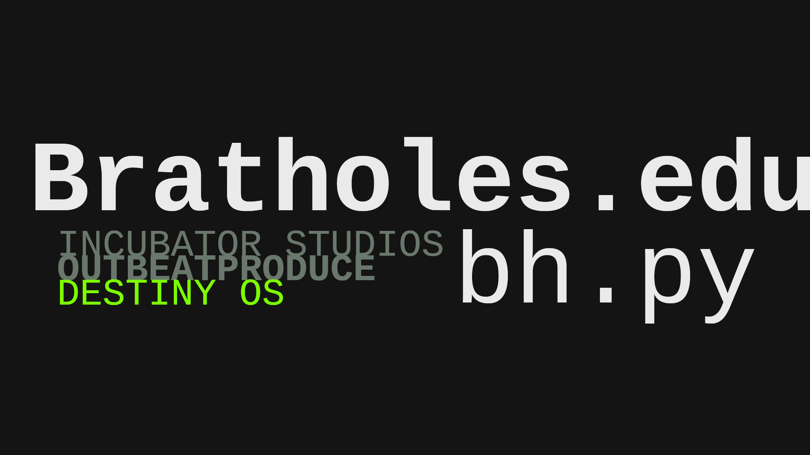

~|\\destiny.nano\\|
additional resource: destiny-pyscriptapps / BratholesAuthored by: Liwanag, Akira "Nishes" @3tn3rpryz3
Instructions: (1) plain meta-hack
(2) or try (choose from) #ISOBP C-AI: Crown CAI | ART CAI | Special: Birth Snapshot (CAI)
#AN0NYM0US
Also tune in to #ISOBPRadio334_1 #audioplayermeta #corp #gov
Bratholes: github.com/AkiraLiwanag/Bratholes

© Incubator Studios 2024 Valley Inc. VI